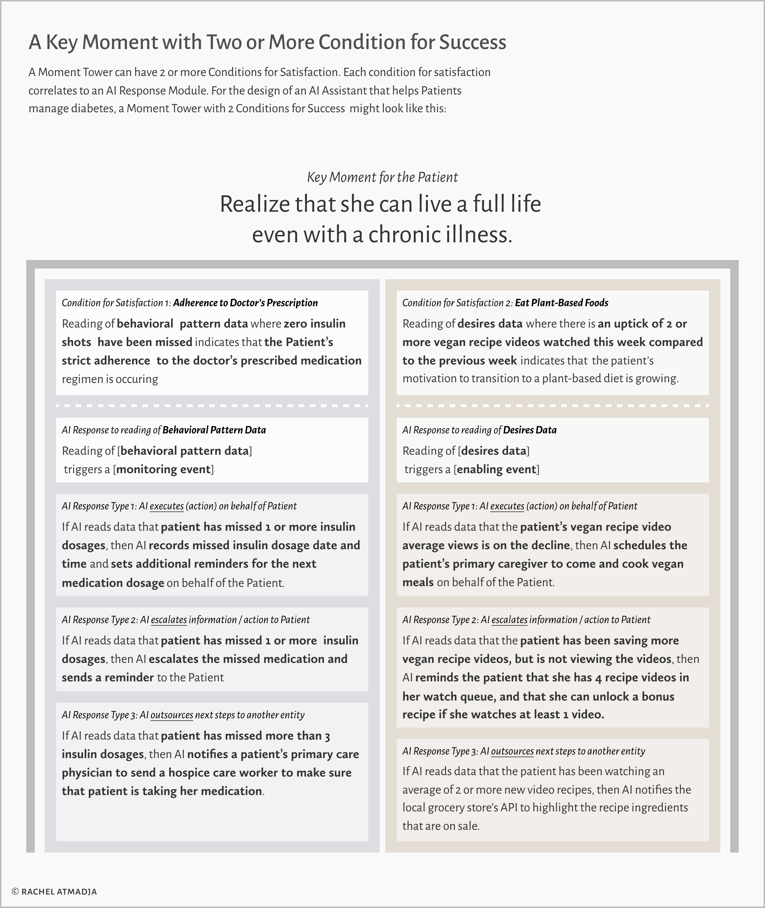

ROLES
- This is a solo project where I created a framework that bridges Experience Design and Data in building AI-powered services.
DETAILS
- I synthesized this framework from principles found in Alan Cooper's Goal-Directed Design, Indi Young's Mental Model Framework, & Adaptive Path's Experience Map framework.
OUTPUT
- Narrative writing and diagrams to illustrate the framework
Reference the EOY Narrative and Key Results, Strengths, and Competencies in writing this.
Use EOY feedback quotes from others as pullquotes.
June 13, 2020
"Rachel has been instrumental to the future of KORS..."
Definition
The basic unit is a Moment Tower
AI-powered services consist of a series of Key Moments where the AI entity senses the person’s needs through the reading of data, so that it can respond in a way that is appropriate to the person’s life context. A Moment Tower perfectly captures this 'sense and respond' mode of thinking of the AI entity.
A Moment Tower consists of three primary components. They are the Key Moment, the Condition for Satisfaction, and the AI Response Module. Here they are in relation to each other:
Mental Spaces point towards the measures for success
The mental space of 'building hope for the present' correlates with the patient's self-efficacy. The patient's belief that they can change their behaviors to produce specific goals is a success metric by which we can measure how well the AI entity is serving a patient.
The mental space of 'building hope for the future' correlates with the patient's confidence. The AI entity's success in assisting the patient to thrive can be measured by the degree of confidence that the patient has in living a full life in the future.
Context
The trouble with task-oriented tools in an event-driven world
As an Experience Designer in the Finance Technology space, I grapple with unpredictability in our customers’ financial journeys on a daily basis. Therefore it was with great irony that I tried to create some measure of predictability by portraying the customer experience as a linear journey. I was trying to capture a non-linear, event-driven customer journey in an artifact that was designed to capture sequential, process-driven tasks—and it was not yielding the complete picture.
Imagine a scenario where the next stage of the customer journey is influenced by the life contexts unique to each customer. And then layer the behavioral variables that influence the customer’s decisions as to where they will proceed on top of that. This scenario exposes the limitation of task-oriented mapping artifacts in capturing event-driven experiences.
A customer journey map may be a great framework for capturing experiences that can be broken down to predictable process steps towards a known goal. But what happens when the goal changes due to unforeseen life circumstances?
Principles
Before we get to the components of a Moment Map, here are some guiding principles in designing event-driven, guided experiences with the Moment Map framework.
Key Moments are life-goals, not end-task goals
A goal at its highest level is intangible in nature and they are often expressed as thoughts (realizations) and feelings. The best way to articulate a Key Moment is to describe the thoughts and feeling that the customer has when that moment is achieved. Here are a few examples of how to frame a moment:
The Moment when I...
Realize that the cost of inaction is higher than the cost of taking action.
Realize that I have the power to change my situation.
Feel empowered to make a life-changing decision.
Feel hopeful in getting back on track after a relapse.
Believe that I can successfully make a change.
A machine can not understand these intangible sentiments. It just understands what a person is feeling or thinking through that person's behavioral data. This means that when we design the AI entity's responses, we will need to train the AI entity on how to infer human thoughts and mental states through the reading of data.
Synthesis
Component 1: the Key Moment
The best way to articulate a Key Moment is to describe the feelings or thoughts that a customer has when that moment is achieved. For the patient who has been diagnosed with a chronic illness such as diabetes, a Key Moment in this patient's journey might be:
A Moment Tower with multiple Conditions for Satisfaction
A Moment Tower can have 1 or more Conditions for Satisfaction. Each condition for satisfaction correlates to an AI Response Module, where the AI entity "reads" the behavioral data to decide between 3 categories of actions. Here is what a Key Moment Tower with two conditions for success might look like:
